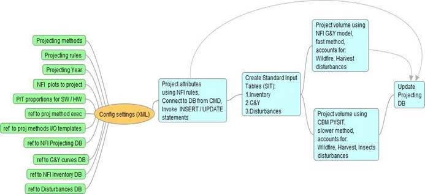

NFI Projection System (PS). User Guide.
1. Acknowledgments
2. Terms and conventions
3. Goal
4. Users
5. General logistics
· Projection Framework
· PS Architecture
· Projecting volume
· Projecting attributes (NFI rules)
6. GY curves
· GY resources, CBM SIT tables
· Formatted NFI SIT tables
7. Accounting for disturbances
· Wildfire
· Harvesting
· Insects
· Multiple disturbances
8. PS Projection database
9. Code Implementation
· Directories (local system, network, CVS Mercurial)
· Compiling executables
· Checking PS updates to CVS Mercurial
· Developer API documentation
10. Running PS
· System Requirements
· Executing PS from CMD
· Configuration XML file
· Plot list file
11. Frequent errors
· No CBM mapping of NFI species
· No GY is available for species
· Incorrect combinations of jurisdiction and ecozone names
12. Multiple PS programs running concurrently from different PC
13. Useful SQL scripts
· Update G&Y DB data
· Update Wildfire DB data
· Update Harvesting DB data
14. Re-measurement cycle 1(2007-2017). Some statistics.
15. Backwards projecting
1.Acknowledgments
NFI PS was created in close collaboration with NFI, CAT, NBAC and NTEMS teams, specifically:
· Graham Stinson, Werner Kurz, Carolyn Smyth, Victor Sotskov – general framework,
· Carolyn Smyth, Scott Morken – accommodating CBM3 for projecting volume,
· Graham Stinson, Paul Boudewyn, Frank Eichel, Victor Sotskov – generalised logistics, architecture, testing and validation,
· Eric Nelson – provincial G&Y SIT tables,
· Paul Boudewyn, Frank Eichel – NFI SIT tables,
· Frank Eichel – jurisdictional ecoregions, conversion of NTEMS pixel data to shapefile,
· Alex Song, Kristian Arndt, Victor Sotskov – national G&Y DB schema, national disturbance DB schema,
· Alan Wong, Josh Braidek - coding and programming,
· Scott Morken, Max Fellow, Andrew Dyk, Geordie Hobart – code review,
· Ron Hall, Rob Skakun, Guillermo Castilla – national coverage of wildfire data (NBAC)
· Joanne White, Geordie Hobart – national coverage of harvesting data (NTEMS)
2.Terms and conventions
· Photoplot = generic term for any or all NFI 2 x 2 km sample units located on the national sampling framework, irrespective of info source
· LC = NFI photoplot land cover layer
· Projected year = calendar year selected by the update process user to which LC attributes for all selected photoplots are projected
· G&Y = growth and yield: including either software tools that project stand growth given stand attribute information as inputs, or tables that can be used to look up stand volume (yield) given stand attributes
3.Goal
To project (forward and backward) photoplot land cover (LC) attributes (required for estimation) for a user-selected group of photo plots to a user-selected projection year. Required are:
· the NFI photoplot measurement data acquired most recently before the projection year,
· Natural disturbance monitoring and mapping data (areas damaged by wildfire, insects and disease, and severe weather),
· Human activity data (areas afforested, harvested, deforested),
· G&Y (growth and yield models or tables).
4.Users
The Projection System (PS) is operated and maintained by the NFI Project Office. It is a separate process from NFI photo plot measurement and estimation. The most recent NFI photo plot data are taken by the Projection System as inputs. The outputs of the Projection System may be taken as input by the compilation and estimation processes. Anticipated users of Projection System outputs include:
· NFI statistical estimation process (SAS programs)
· CFS and NFI collaborator agency data analysts and modellers
· External NFI data requestors
5. General logistics
Projection Framework
PS Architecture

Projecting volume
PS was used to project forward baseline data (PP and EOSD) at national level. The results will be used for NFI estimate of national volume change for Re-measurement 1.
PS also includes option to project backward. General framework and logistics are described below in section 15.
The present version of the PS has 2 volume projection methods to choose from. The first method is fast, based on using NFI G&Y model and accounts for disturbances types Wildfire, Harvesting.
The second method uses command line CBM module PYSIT. The reason behind choosing PYSIT is accounting for more than 200 different types of disturbances, including wildfire, harvesting, insects, deforestation, roads and landings and many other. This method is slower.
The input data for both methods includes 3 types of information: inventory information about projected plots, growth and yield information (curves) for polygon species, disturbance information over period of projection.
Inventory information includes: polygons ids, polygons area, jurisdiction, ecozone, lead species names, species age. Inventory information is derived by PS program from NFI baseline DB.
Growth and yield (G&Y) information includes: polygons ids, polygons area, jurisdiction, ecozone, lead species names, values of merchantable volume at different species age. G&Y information is derived from NFI national G&Y DB which includes formatted CBM G&Y curves for different jurisdictions.
Disturbance information includes: polygons ids, jurisdiction, ecozone, disturbed area, mortality. Disturbance information is derived from NFI disturbance lookup table. Lookup contains results of pre-processed intersection of NFI plot grid and national disturbance coverages for wildfire (project NBAC - since 1986) and harvesting (project NTEMS - since 1986).
PYSIT processes input data to project baseline (inventory) volume to a specified year using G&Y information and accounting for specified types of disturbance over period of projection.
The output data includes: polygons ids and projected merchantable volumes for softwood and hardwood components for each year within projected period.
The general sequence of steps followed by the module “Project volume (PYSIT) and attr (rules)” to project volume is as follows:
- Determine NFI ecozone and jurisdiction ecoregion using nfi plot ID, given jurisdiction and DB lookup table nfi_pp_gy.plot_juris zones
- Select leading species by % in polygon composition using DB table nfi_ppprd_baseline.pp_tree_species_comp
- Convert NFI gross total volume (GTV) to provincial gross merchantable volume (GMV) volume using DB table nfi_pp_gy.gmv_ratios (vegetation type and age dependant), definitions of GTV and GMV can be found in NFI document:
· NFI Stand Volume Survey Results_ver3_pb.docx
- Select multiple curve types corresponding to selected jurisdiction, spatial unit and leading species using NFI SIT view nfi_pp_gy.gy_curves
- Select curve that best fits the gross merchantable volume at the age of the leading species and corresponds to selected leading species, curve type, jurisdiction, NFI ecozone, jurisdiction ecoregion
- Calculate absolute GMV increment between T0 – T1 on the chosen curve
- Add GMV absolute increment to baseline GMV stand volume
- Convert projected GMV volume back to projected GTV volume
CBM PYSIT has to be installed on the system running PS, for example: C:\CBM\pysit\upgrade_2014\Release\pysit.exe
For its normal execution PYSIT requires:
· input file in a special format with reference to CBM3 databases and projects directories, located in directory: C:\CBM\pysit\upgrade_2014\Release\pysit_input.py,
· CBM3 installed, for example: C:\Program Files (x86)\Operational-Scale CBM-CFS3\
The same input file also is used for a fast method based on NFI G&Y. Input file is created dynamically by PS using an pre-configured template and queries to NFI inventory DB, G&Y and disturbance DB. Input file includes 3 types of data:
· inventory data
· growth & yield data
· disturbance data
Both methods populate DB table proj_output which contains GTV values for each polygon.
PYSIT was configured by Carolyn Smyth to generate merchantable volume instead of biomass. This was done by assigning new values to the following PYSIT parameters:
· tblAdminBoundaryDefault – set top and stump proportions to 0
· tblEcoboundaryDefault – set the stemannualTurnover to be 0
· A=1
· B=1
· A_nonmerch=1
· B_nonmerch=0
· K_non_merch=0
· Cap_nonmerch=1;
· A_sap=1
· B_sap=0
· K_sap=0
· A1,a2,a3,b1,b2,b3,c1,c2,c3=0
· Min_volume=0;
· Max_volume=-10000
· Low_stemwood, bark etc =0
· High_stemwood, bark, etc=1000
Projecting attributes (NFI rules)
Projection rules depend on presence of disturbance events, disturbance type and are illustrated in Table 1.

Attributes should be projected before projecting volume. Attributes are projected by running batch CMD script
C:\Proj_concurrent\ project_attributes.bat.
Batch script connects to NFI DB, reads configuration file and invokes INSERT / UPDATE query file C:\Proj_concurrent\project_attributes.sql.
INSERT / UPDATE statements implement the projecting rules illustrated in Table1.
6. GY Resources
CBM SIT tables
To project volume NFI PS is using CBM SIT provincial tables provided by the Carbon Accounting Team (CAT). The format of provincial SIT tables varies by province. They might include some of the following classifiers:
· one or more spatial classifiers (administrative areas, ecoregions),
· forest types or species groups,
· a productivity indicator,
· leading species,
· age.
The volume is presented by leading species and is usually gross merchantable volume (gmv).
Formatted NFI SIT tables
All CBM SIT GY tables have been translated into a uniform format in NFI SIT tables with the following fields:
· juris_id
· ecozone_id
· juris_zone (jurisdiction ecoregions or other spatial unit)
· juris_species (jurisdiction species code)
· curve_type (forest types and productivity)
· age
· vol_source (used GY resource)
· vol_type (gross vs. net, total vs. merchantable)
· stand_vol_ha, m3/ha (stand volume represented by lead species)
· genus (NFI code)
· species (NFI code)
· comments
NFI SIT tables are stored in a NFI G&Y DB view nfi_pp_gy.gy_curves
7. Accounting for disturbances. Wildfire
A binary model is used to account for impacts due to wildfire on projected volume and attributes. If the percentage of burned area is equal to or bigger than 50.1% of the polygon, the polygon is considered to be completely burned. Otherwise – the fire event is ignored, and the projection of volume and attributes is done as if no fire had occurred over the period of observation.
Note that this binary simplification (polygons treated as burned or not rather than sub-divided into burned and unburned portions) is made because the spatial precision of polygon segmentation is higher than the typical spatial precision of burned area mapping, and LC polygons are typically several orders of magnitude smaller than burned area polygons. In testing, the simplification was found to have minimal impact on outputs when projecting reasonably large numbers of plots while providing significant performance gains (i.e. no new LC polygons being created).
National wildfire national coverage is obtained from the NBAC project annually and stored in a NFI disturbance DB schema, nfi_pp_dist. Raw wildfire data are stored in their original format in the table nfi_pp_dist.dist_nbac. Raw data are used to update the lookup table, nfi_pp_dist.dist_all, containing information on wildfire events from 1986 and % of burned area for each NFI polygon. The lookup table is populated / updated from the results of a pre-processed overlay performed annually as new Fire, Harvest, and Insect data area obtained.
Accounting for disturbances. Harvesting
Binary model is used to account for the impact of harvesting on projected volumes and attributes. If the percentage of harvested area is equal to or bigger than 50.1% of the polygon, the polygon is considered to be completely harvested, otherwise – the harvest event is ignored, and the projection of attributes is done as if no harvesting had occurred over the period of observation.
A national harvesting coverage is obtained from the NTEMS project annually and stored in a NFI disturbance DB schema nfi_pp_dist. Raw harvesting data are stored in the original format in the table nfi_pp_dist.dist_ntems. Raw data are used to update the lookup table nfi_pp_dist.dist_all, containing information on harvesting events from 1986 and % of area harvested for each NFI polygon.. The lookup table is populated / updated from the results of a pre-processed overlay performed annually as new Fire, Harvest, Insects data are obtained.
Accounting for disturbances. Insects
At this time NFI disturbance DB includes insects data (spatial and attributes) for SBW in QC. The current version of the PS handles insect disturbance using functionality of PYSIT method.
Accounting for disturbances. Multiple disturbances
In case of multiple disturbance events (fire and/or harvesting) the total disturbed area is calculated over the projection period and compared with the threshold of 50.1%. The year of the latest event is assigned as the disturbance year. This approach is taken because only the LC attributes in the projection year are of interest. Mid-projection LC attributes are not calculated by the PS. For example, the PS does not calculate volume reductions – it only reports volume in the projection year. This information can then be used, outside the PS, to analyze forest.
8. PS Projection Database
Projected land cover volume and attributes are stored in Projection DB schema nfi_pp_proj. Schema includes tables:
· pp_proj_rules
· pp_proj_metadata
· pp_landcover
· pp_std_layer_header
· pp_std_layer_disturbance
· pp_std_layer_treatment
· pp_std_layer_origin
· pp_std_layer_tree_sp
According to NFI Photo Data Dictionary definitions, the attribute info_date is assigned the value of the projection year, and the attribute model_yr is assigned the value of the baseline info_date.
Detected harvesting events over the projected period are stored in the table pp_std_layer_treatment.
9.Code Implementation.
Directories (local system, network, CVS Mercurial)
The code is implemented in Python 3.3. On the local system the path to PS python files is C:\Proj_concurrent\ , path to executables is C:\Proj_concurrent\dist. Network location of PS files and executables:
In control version system (CVS) Mercurial location is https://sleet.nfis.org/NFI/Projecting/
The code can be edited in the Python GUI IDLE or in a text editor such as Notepad++.
Compiling executables
If some updates have been done to python files the PS python code should be re-compiled using the following CMD commands:
· cd C:\Proj_concurrent\
· python setup.py py2exe
The normal compiling result is a CMD output like the following:
Checking PS updates into CVS Mercurial
To check out the online repository https://sleet.nfis.org/NFI/Projecting/, create a directory on local system C:\Proj_concurrent\ and issue hg commands in CMD window (assuming that hg software is installed on the local system)
· cd /d C:\Proj_concurrent\
· hg pull
· hg update
To check in online repository issue hg commands in the root directory C:\Proj_concurrent\
· hg add
· hg commit
· hg push
Developer API documentation
Developer API documentation contains description of PS python packages, classes, methods and functions. It was generated by software Doxygen and is located here:
\\vic-fas1\nfidwarfs\nfi\OperationalDelivery\Automation\NFI_update\National\Documentation\index.html
10.Running PS.
System Requirements to run PS:
- OS Windows >= 7
- Python 3.3 should include modules:
- LXML
- NUMPY
- PYWIN32_SYSTEM32
- PYTHONWIN
- SIMPLEJASON
- Replace in file “ordered_dict.py” line: “…from UserDict import…” with line: “…from collection.UserDict import…”
- Insert new line in file “compat.py”: “from imp import reload as reload_module”, and comment out the line: “from importlib import reload as reload_module”
- WHEEL
- SETUPTOOLS
- WIN32
- WIN32COM
- WIN32COMEXT
- PYSHP-1.2.1
- READLINE
- PYTHONDEV
- MS Visual Studio 9.0
- Windows system environment PYTHONPATH variable should include path to C:\Python33\; C:\Python33\Lib\site-packages
- Template C:\CBM\pysit\upgrade_2014\Release\pysit_input_template.py SHOULD NOT be modified, timestamp: 2015-04-22 1:54 pm, extra lines SHOULD NOT be added !!!
- On pgpfc1.nfis.org there is a helper schema nfi_pp_proj_app, it includes table proj_output which is used by PS and SHOUD NOT be deleted !!!
Executing PS from CMD
PS can be run by issuing the following commands in CMD window:
· cd /d C:\Proj_concurrent\dist
· project_attributes.bat
· ps_top_wrapper.exe ps_config.xml
Configuration XML file
The XML configuration and schema validation files (ps_config.xml and ps_config.xsd) are located in: C:\Proj_concurrent\dist\. Validation file is used by PS during execution to validate correct format of configuration file.
The following parameters can be configured in XML file:
· projection year
· jurisdiction
· reference to plot list to project
· reference to DB schemas (baseline, G&Y, disturbance, projecting)
· login credentials
· projecting method
· references to input and output files for projection method
Plot list file
The list of plots to project should be created as a text file in the directory: C:\CBM\pysit\upgrade_2014\Release\plot_list.txt. Plot list should be created as one field file containing plot numbers, for example:
1293851
1293856
1293861
1293866
1293871
1293881
1293886
Projection output
The projecting process is over when the cursor in a CMD window stops blinking and the current directory is shown. If the projection process has run without error – the results of projecting volume and attributes are in the tables of schema nfi_ppp_proj:
· pp_std_layer_header,
· pp_landcover,
· pp_std_layer_tree_sp,
· pp_std_layer_disturbance,
· pp_std_layer_treatment
Projection log file
The details of projecting process and possible errors are recorded in a log file C:\Proj_concurrent\dist\wrapper.log. To find an error:
· Open log file in a notepad app
· Search for key word ‘error’ in Edit à Find menu
11. Frequent errors
All errors and exceptions caught by the PS code are recorded in PS log file C:\Proj_concurrent\dist\wrapper.log.
No CBM mapping for NFI species
This is a CBM PYSIT error.
Resolution: to add species mapping (NFI à jurisdiction) in the file on_sit_inv.py, line 63, parameter val_descrep. NFI species name should be taken from the table nfi_dms.nfi_tree_species_lookup, CBM species name should be taken from the table tblSpeciesTypeDefault in the CBM Access DB C:\Program Files (x86)\Operational-Scale CBM-CFS3\Admin\DBs\ ArchiveIndex_Beta_Install_Vol2Bio.mdb
No GY is available for species
This is a NFI data error. It is manifested by CBM error in log file wrapper.log. The error appears after the statement “Validating CBM project”. Error is generated because number of stands in the inventory section of input file is not matching the number of stands in G&Y section. Resolution:
· Determine missing stands by running 2 python scripts in directory \\vic-fas1\nfidwarfs\nfi\OperationalDelivery\Automation\NFI_update\National\python_scripts: first, editing_input_file.py and second, missing_gy_lines.py.
· Output is a text file missing_gy_*.txt in the directory C:\CBM\pysit\upgrade_2014\Release,
· For each stand in the list of missing G&Y data, update the view nfi_pp_gy.gy_curves by executing a collection of queries using: \\vic-fas1\nfidwarfs\nfi\OperationalDelivery\Automation\NFI_update\National\disturbances\multiple_disturbances\insert_missing_gy.sql
Incorrect combination of jurisdiction name and ecozone name
This is an error generated after the PYSIT validation operation. It is caused by an incorrect combination of jurisdiction name and ecozone name in the PYSIT input file: C:\CBM\pysit\upgrade_2014\Release\pysit_input.py.
The correct CBM combinations are shown in the table: \\vic-fas1\nfidwarfs\nfi\OperationalDelivery\Automation\NFI_update\National\cbm_nfi_eco_mapping\cbm_nfi_eco_mapping.docx
Resolution:
· edit mapping in the file C:\Proj_concurrent\on_sit_inv.py, variable val_discrep, line 63,
· re-compile the PS as advised in 9.b.
12.Multiple PS programs running concurrently from different systems
To increase performance when projecting big datasets multiple systems can be used to run PS concurrently. The requirement is NOT to project overlapping datasets – the datasets should specify different jurisdictions, nfi units or plots. At this time PS is configured for running concurrently two processes: PC_1 and PC_2
To prevent DB locks when running concurrently PC_1 and PC_2 operate on different columns in the DB table nfi_pp_proj_app.proj_output: vtot_1 and vtot_2 respectively. This is hardcoded in the python code by setting the value of parameter vtot: in the files vol_convert.py and upd_projdb.py.
To run concurrently from 3 or 4 PCs the corresponding columns vtot_3, vtot_4 should be added to the table nfi_pp_proj_app.proj_output; also the value of parameter vtot in the python code (vol_convert.py, upd_projdb.py) should be set to vtot_3 and vtot_4 respectively on PC_3 and PC_4.
13.Useful SQL scripts
Update G&Y DB data
When a new NFI SIT table is available for a jurisdiction the DB update procedure is performed as a series of queries documented in: \\vic-fas1\nfidwarfs\OperationalDelivery\Automation\NFI_update\National\SQLs\populate_with_provincial_data.sq l
Update Wildfire DB data
The NBAC project office submits to NFI annually a new national wildfire coverage as a shapefiles. After receiving the shapefile, two actions should be taken:
· Update NFI DB wildfire table nfi_pp_dist.dist_nbac with raw wildfire data
· Update NFI DB lookup disturbance table nfi_pp_dist.dist_all with new wildfire data
Both actions are performed with steps described in: \\vic-fas1\nfidwarfs\nfi\OperationalDelivery\Automation NFI_update\National\disturbances\multiple_disturbances\update_dist_nbac.sql
The second action includes intersection of a new wildfire coverage with NFI land cover layer for a specific UTM zone in the range of 07 - 22. Results of the intersection are stored in a corresponding table in a user defined schema. After that the table nfi_pp_dist.dist_all is updated with intersection results for each UTM zone.
Update Harvesting DB data
The NTEMS project office submits to NFI annually a new national harvesting coverage as a pixel data. Pixel NTEMS data are converted to shapefile by NFI team and the table nfi_pp_dist.dist_all is updated using steps described in:
14.Re-measurement cycle 1 (2007 – 2017). Some statistics.
Comparison analysis was performed on projected photo plots dataset:
\\vic-fas1\nfidwarfs\nfi\OperationalDelivery\Automation\NFI_update\National\projecting_Canada\
Projected volumes were compared to measured values (at plot level and where they are available) using 2 statistical criteria:
· Pearson correlation (P_correl)
· and Standard error (std_error)
Pearson correlation - correlation coefficient between projected and measured volumes (plot level), reflects linear relationship between projected and measured values, determined with Excel function CORREL(x,y)
Standard error (in %) measures the accuracy with which the projected volumes represent measured values, or average deviation, determined using Excel function STDEV and SQRT:
std_error = STDEV(100*(gtv_proj - gtv_meas)/gtv_meas) / SQRT(N), (1)
Where:
gtv_proj – projected volume ,
gtv_meas – measured volume,
N – number of measured plots in NFI unit,
T0, T1 – baseline and projected info year,
1.PLOT LEVEL - PP. Here are the results for 18 NFI units where re-measured PP volumes were available (Re-measurement 1):
Table 1a.(plot level) Table 1b (plot level)
|
juris_id |
unit_id |
T1-T0 |
N |
P_correl |
std_err |
juris_id |
unit_id |
T1-T0 |
N |
P_correl |
std_err |
|
|
MB |
20 |
4 |
183 |
0.92 |
2 |
QC |
14 |
14 |
828 |
0.59 |
1.3 |
|
|
SK |
25 |
9 |
46 |
0.91 |
7.4 |
MB |
20 |
4 |
183 |
0.92 |
2 |
|
|
MB |
21 |
5 |
67 |
0.88 |
3.2 |
AB |
31 |
17 |
417 |
0.59 |
2.4 |
|
|
NS |
4 |
13 |
49 |
0.86 |
3.6 |
QC |
10 |
15 |
52 |
0.37 |
2.7 |
|
|
NL |
1 |
6 |
68 |
0.84 |
4.9 |
MB |
21 |
5 |
67 |
0.88 |
3.2 |
|
|
BC |
38 |
7 |
98 |
0.82 |
7.2 |
ON |
15 |
12 |
455 |
0.52 |
3.2 |
|
|
AB |
28 |
18 |
13 |
0.78 |
9 |
ON |
16 |
11 |
90 |
0.7 |
3.4 |
|
|
SK |
26 |
7 |
236 |
0.76 |
5.5 |
NB |
6 |
10 |
62 |
0.56 |
3.5 |
|
|
ON |
16 |
11 |
90 |
0.7 |
3.4 |
NS |
4 |
13 |
49 |
0.86 |
3.6 |
|
|
BC |
37 |
11 |
8 |
0.69 |
9.2 |
QC |
11 |
14 |
83 |
0.33 |
3.8 |
|
|
AB |
31 |
17 |
417 |
0.59 |
2.4 |
NL |
1 |
6 |
68 |
0.84 |
4.9 |
|
|
QC |
14 |
14 |
828 |
0.59 |
1.3 |
SK |
26 |
7 |
236 |
0.76 |
5.5 |
|
|
NB |
6 |
10 |
62 |
0.56 |
3.5 |
BC |
38 |
7 |
98 |
0.82 |
7.2 |
|
|
ON |
15 |
12 |
455 |
0.52 |
3.2 |
SK |
25 |
9 |
46 |
0.91 |
7.4 |
|
|
AB |
33 |
8 |
14 |
0.5 |
9.1 |
AB |
28 |
18 |
13 |
0.78 |
9 |
|
|
BC |
34 |
10 |
9 |
0.43 |
75.3 |
AB |
33 |
8 |
14 |
0.5 |
9.1 |
|
|
QC |
10 |
15 |
52 |
0.37 |
2.7 |
BC |
37 |
11 |
8 |
0.69 |
9.2 |
|
|
QC |
11 |
14 |
83 |
0.33 |
3.8 |
BC |
34 |
10 |
9 |
0.43 |
75.3 |
Both tables contain the same data, results in Table 1a ordered by correlation coefficient, in Table 1b – by standard error.
Green color represents the best projecting values, red – the worst, yellow – intermediate.
As can be seen from the tables, units in provinces of AB, MB, NS and ON have the best projecting values for both statistical criteria. Projecting is the most accurate for these units.
The better linear relationship between projected and measured volumes are for the units in provinces AB, MB, NS,NL, ON, SK (correlation)
The lowest deviation of projected volumes from measured are in units of AB, MB, NB, NS, ON , QC (standard error). The lowest linear dependency - units 10, 11 in province of QC.
The highest deviation - units 28, 33 in province of AB, and units 34,37 in province of BC
The spatial distribution of correlation coefficient for PP is illustrated by Map 1 (plot level):
Map1.
The spatial distribution of standard error for PP is illustrated by Map 2:
Map2
15.Backwards projecting framework. General concepts:
· Usage of RE-MEASUREMENT data to correct EOSD / BASELINE data,
· Plots with only post-disturbance growth are projected backwards from the year of disturbance.
Framework:
Details of logistics:
1.0 The stand is not disturbed,
1.1 The stand is disturbed,
2.0. Project backwards using the same approach of choosing GY as for projecting forward, Tproj < Tmeas
2.1 The lead species age > (Tmodel_from – Tdist_yr), the same approach as in #2.0.
2.2 The lead species age <= (Tmodel_from – Tdist_yr), look for lead species - survivor in the same polygon and of the same vegetation type,
3.0 There IS a lead species - survivor in the same plot and of the same vegetation type,
3.1 There is NO lead species - survivor in the same plot and of the same vegetation type,
4.0 Use VOL and AGE of found lead species - survivor to project backwards as in #2.0,
4.1 Use merchantable VOL and GY curves to determine AGE in disturbance year, proceed to #2.0,
5.0 Set PROJ_FROM year to DIST_YR, proceed to #2.0.
Example: plot 1287031
Measurement Info Year – 2011 (PROJ_FROM_YR)
Projected To Year – 1999
Disturbance Year – 2002 (DIST_YR)
Post-disturbance period – 9 years
19 treed polygons with vol > 1 (only those were projected backwards)
2 polygons (29, 42) are survivors, lead species of vegetation type ‘TC’,
Survivor’s age is 41 years and exceed the post disturbance period. Those polygons were backward projected according to the path in framework logistic:
1.1 à 2.1 à 2.0
Other polygons have age 9 years and are considered as post-disturbance growth. All of these polygons have vegetation type ‘TB’ not matching the vegetation type of species survivors (TC) and therefore were projected back according to the path in framework logistic:
1.1 à 2.2 à 3.1 à 4.1 à 5.0 à 2.0
In 4.1 the merchantable volume in the year of disturbance VOL(dist_yr) was determined as:
VOL(dist_yr) = VOL(meas) – VOL(GY, age = post-disturbance period)
VOL(dist_yr) was used to determine AGE(dist_yr) in the year of disturbance (2002) using GY curves and averaging by forest types.
Finally projecting backwards is done from the year of disturbance (PROJ_FROM_YR = DIST_YR), using above determined values of VOL(dist_yr) and AGE(dist_yr)